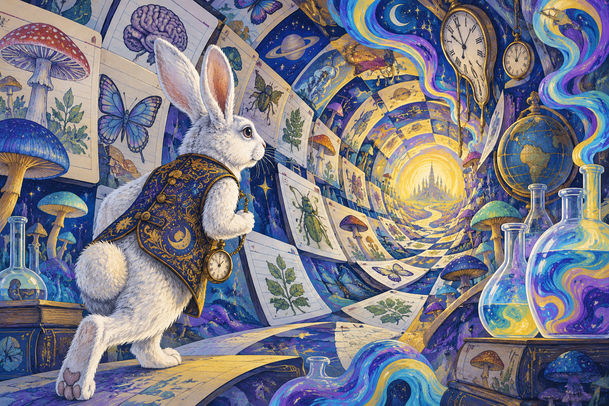
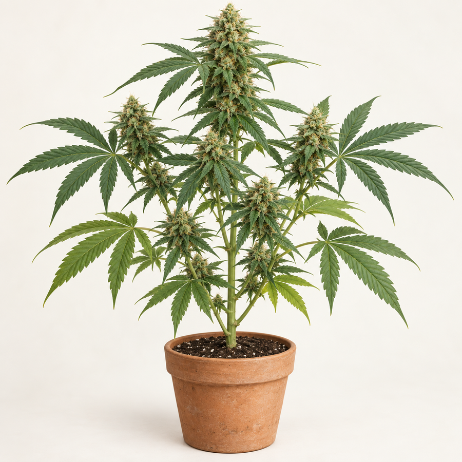
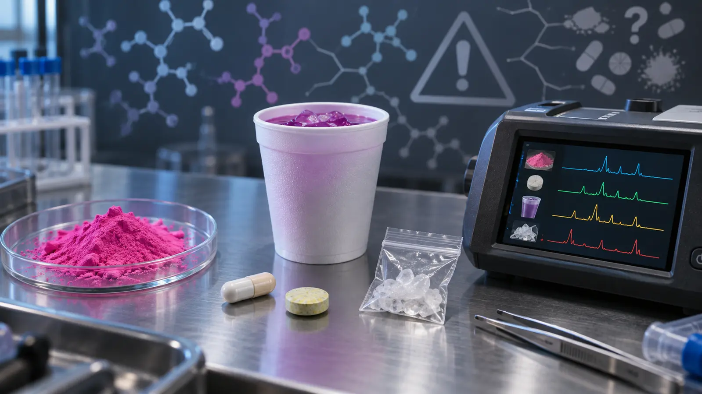

Section 4: Pharmacological Taxonomy and Visual Drug Atlas
Classification helps us compare drugs, but no single system tells the
whole story. Explore how botanical sources become contemporary
products, then connect appearance to pharmacology, medicine, law, and
social meaning.
Opening case · Stories versus pharmacology
4.1Go Ask Alice: when a frightening story is mistaken for drug evidence

An original white-rabbit visual connects storytelling, altered perception, and the classification of drugs without reproducing a movie character.
Section 4 question: What happens when legal classification is influenced by a compelling social story before researchers can establish the typical pharmacological pattern?
Content note: This story discusses adolescent drug use, rape, sexual coercion, exploitation, and death.
In 1971, readers were told they were opening the private diary of an unnamed fifteen-year-old girl. After unknowingly consuming LSD, the narrator rapidly descends into repeated drug use, running away, sexual victimization, and an eventual death described as a possible overdose. The apparent testimony of a dead teenager made the warning feel more authoritative than ordinary fiction.
Go Ask Alice was marketed as “A Real Diary” by an anonymous teenager. It is now widely understood as a fictional or heavily fabricated work created by Beatrice Sparks, who presented herself as its editor. The story became a bestseller, entered schools, and helped popularize an anti-drug narrative in which one exposure could propel an otherwise ordinary teenager almost immediately from LSD to addiction, social “degradation,” and death.
The classification timeline corrects an important claim: the federal Controlled Substances Act was signed on October 27, 1970; Go Ask Alice was published on September 14, 1971. The book therefore did not cause Congress to create the five schedules. It did, however, arrive as the new system was taking hold and gave moral entrepreneurs a vivid, emotionally persuasive story that could reinforce public support for punitive drug control even when the story itself was not reliable evidence.
What was fabricated—and what danger was real?
The constructed drug story
The book compresses a dramatic sequence: involuntary LSD exposure → rapid escalation across drugs → loss of identity and control → sexual victimization → death. Presenting this fictional chain as a diary encouraged readers to mistake a frightening narrative for research about how drug use normally develops.
↔
The documented exploitation
Drugs can be used to incapacitate people for sexual assault. Traffickers may also exploit addiction and threaten withdrawal to control victims. Those harms are real, serious, and likely underreported—but they result from perpetrators, unequal power, vulnerability, and market conditions, not from an automatic pharmacological path experienced by every person who uses a drug.
The conflict hidden inside the story
A false diary can still contain recognizable social dangers. The book’s narrator is raped while intoxicated and later pressured to exchange sexual access for drugs. The mistake is not taking those harms seriously; it is treating the drug alone as the complete explanation. A conflict perspective asks who gains control when dependence exists. In an illegal market, an exploiter can control supply, price, debt, secrecy, and the threat of withdrawal while a victim may fear arrest or distrust authorities. When evidence-based treatment and regulated medical access are unavailable, that power can remain with people who use drugs as leverage.
Regulation is not permission for exploitation. A health-centered system moves dependence treatment, dosage, purity, and withdrawal management toward accountable medical professionals, while criminal law concentrates on rape, coercion, trafficking, sales to minors, violence, and unlicensed supply. It cannot eliminate abuse, but it can reduce one tool of control: an exploiter’s monopoly over the substance a person’s body has come to need.
Symbolic interactionism How did the label “real diary” change the meaning and credibility of this fictional story?
Conflict theory Who gained authority from the drug panic—and who gains leverage when access is controlled by an illegal supplier?
Structural functionalism Did the classification system improve safety, or did weak evidence and punitive responses create latent dysfunctions?
4.2 One substance can belong to several categories
A pharmacological taxonomy groups substances by
features such as their primary action in the body, chemical origin,
medical use, or legal status. These systems overlap. Cannabis, for
example, has its own cannabinoid category and may produce relaxation,
altered perception, impaired coordination, or anxiety. Calling it only
a “depressant” or only a “hallucinogen” hides that complexity.
Images are educational examples—not a method of
identification.
Appearance cannot confirm a drug’s identity, dose, potency, purity, or
contamination. Products that look alike can contain very different
substances.
4.3 Explore the source-to-form pathways
Select a collection, then choose any image tile. The explanation below
the pathway changes with your selection.

Cannabis plant
What changes?
Why it matters
4.4 How this atlas uses taxonomy
Classification question
Cannabis
Opioids
Primary pharmacological family
Cannabinoids; THC acts mainly through the endocannabinoid
system.
Opioids; these substances act at opioid receptors in the
brain, spinal cord, and other parts of the body.
Origin
Plant material, extracted concentrates, or manufactured
cannabinoid products.
Natural opiates from poppy material, semi-synthetic opioids
made by modifying natural compounds, or fully synthetic
opioids made in laboratories.
Medical context
Some cannabinoid-containing medicines have FDA-approved uses.
State medical-cannabis laws are not the same as FDA approval
of every cannabis product.
Several opioids are prescribed for pain or other medical
purposes. Methadone and buprenorphine also have roles in
treating opioid use disorder.
Major safety distinction
Route, THC concentration, dose, delayed onset of edibles, and
individual vulnerability affect risk.
Respiratory depression is the central overdose danger.
Illicitly manufactured fentanyl may be present without a
person knowing it.
Legal classification
Federal and state definitions may conflict and change over
time.
Legal status differs by substance and authorized medical use;
heroin remains federally Schedule I, while several medical
opioids are available under controlled conditions.
Opiate versus opioid:Opiate is the narrower
term for naturally occurring substances derived from opium, such as
morphine and codeine. Opioid is the broader category that
includes natural, semi-synthetic, and synthetic substances.
A modern working map of the major families
Family
Primary organizing idea
Examples in this atlas
Important complication
Stimulants
Increase activity in selected central and sympathetic nervous-system pathways.
Early disinhibition can feel stimulating; combining depressants can magnify overdose risk.
Classic psychedelics
Alter perception and cognition, commonly through serotonin 5-HT2A signaling.
Psilocybin, mescaline, DMT, LSD
Clinical research is not the same as FDA approval or unsupervised safety.
Empathogens
Produce social-emotional openness alongside stimulant and perceptual effects.
MDMA
Mixed effects resist a one-box classification, and illicit tablets may contain other substances.
Dissociatives
Can disrupt integration of perception, memory, and bodily awareness; many act at NMDA receptors.
Ketamine, esketamine, PCP, DXM
Approved medical use belongs to a specific drug, formulation, indication, and monitoring system.
Inhalants
Grouped by route and product type rather than one receptor action.
Volatile solvents, aerosols, gases, nitrites
Different chemicals can create very different toxicities, including sudden death.
Hormonal/performance drugs
Alter endocrine signaling rather than producing a classic intoxication.
Anabolic-androgenic steroids
A drug need not cause a “high” to produce dependence patterns or serious harm.
Why the older “CNS stabilizer” box was revised:
antidepressants, lithium, and methylphenidate do not form one pharmacological family.
Methylphenidate is a stimulant; antidepressants span several mechanisms; lithium is a
mood-stabilizing medicine. Therapeutic purpose is one classification lens, not a receptor-level taxonomy.
4.5 What a visual pathway can—and cannot—show
It can show transformationStudents can trace a
botanical source into plant material, extracts, medicines, or
illicit market forms.
It can reveal category errorsHeroin is derived from
morphine but is semi-synthetic; fentanyl does not come from the
poppy and is fully synthetic.
It can connect route and onsetSmoking or
inhalation, swallowing, nasal use, transdermal delivery, and
injection can produce different onset and risk patterns. This page
describes routes without teaching preparation.
It cannot verify a sampleColor, shape, packaging,
or texture cannot establish chemical contents. Only appropriate
testing can provide evidence about composition.
4.6 How do we know? Official and non-administrative evidence
Drug knowledge is built from records created for different purposes. Official data
are produced or maintained by public institutions such as law enforcement, courts, public-health
agencies, hospitals, and medical examiners. Non-administrative data are often produced
by universities, community organizations, or participants themselves. “Official” does not mean
complete or unbiased, and “unofficial” does not mean unscientific. The strongest conclusions compare
sources and ask what each system could see, record, or miss.
Official and administrative sources
UCR / Crime Data ExplorerLocal agencies report offenses and arrests to the FBI. Drug arrests measure enforcement and reporting—not the prevalence of drug use.
DAWNThe Drug Abuse Warning Network monitors drug-related emergency-department visits. It captures treated events, not harms for which no emergency care was sought.
N-SUMHSS and TEDSSAMHSA’s current service survey and treatment episode data describe facilities, services, and admissions. An admission is not a unique person, and access, funding, and reporting rules affect the counts.
SUDORS and DOSECDC combines death certificates, medical-examiner or coroner reports, toxicology, and scene evidence in SUDORS; DOSE tracks suspected nonfatal overdoses in emergency departments.
PDMP, seizure, and laboratory dataPrescription monitoring and submitted drug samples reveal parts of legal and illegal supply, but they cannot show every medicine dispensed, substance used, or product never seized.
Academic, community, and self-reported sources
Monitoring the Future (MTF)A University of Michigan study begun in 1975 surveys students and follows selected cohorts over time. School absence, dropout, recall, and honest disclosure affect estimates.
Youth Risk Behavior Survey (YRBS)CDC’s school-based survey monitors health behaviors and experiences among high-school students; it does not represent adolescents who are not enrolled or present.
National Survey on Drug Use and Health (NSDUH)SAMHSA’s national household survey uses confidential self-report. It is federally sponsored but belongs here methodologically because it was designed to estimate otherwise hidden behavior.
National Drug Early Warning System (NDEWS)NDEWS combines sentinel sites, community expertise, 911 data, web monitoring, wastewater, and other signals to detect emerging patterns rapidly.
Interviews, ethnography, and self-monitoringFocus groups, observation, apps, and journals explain motives, meanings, sequences, and settings that administrative databases cannot.
Community drug checking and wastewaterThese can reveal changing supply or population-level signals, but tested samples are selective and wastewater usually cannot establish who used a drug or why.
Historical terminology: Older readings may name ADAM or ADAM II, DASIS, N-SSATS, Pulse Check, and CEWG. Those programs remain useful for historical analysis, but the main chart uses active systems. N-SUMHSS incorporates the former N-SSATS, and NDEWS expanded the earlier CEWG model.
Triangulation: If toxicology, emergency visits, anonymous surveys, interviews, and drug-checking results point in the same direction, confidence increases. When they disagree, the disagreement is a research finding—not a reason to select whichever number supports a preferred policy.
4.7 Drug Interaction Lab: when substances meet inside the body
Polysubstance use means that two or more drugs are
taken together or within a short period, intentionally or
unintentionally. An interaction can change what a drug does, how
strongly it acts, how long it remains active, or how the body
processes it. Interactions also occur among prescriptions,
over-the-counter medicines, alcohol, caffeine, nicotine, supplements,
and illegal drugs.
AdditiveThe combined effect is approximately the
sum of each drug’s effect: 1 + 1 ≈ 2.
SynergisticThe combined effect is greater than a
simple sum: 1 + 1 > 2. This is sometimes called potentiation.
AntagonisticOne drug reduces or blocks a particular
effect of another. This does not necessarily remove every effect or
danger.
Metabolic or idiosyncraticOne substance changes the
absorption, metabolism, or elimination of another—or the combination
produces an unusual, individual, or unexpected response.
Choose a combination to investigate
Synergistic danger
Opioid + benzodiazepine
What students should remember:
“They cancel each other out” is a dangerous myth. A
person may feel less sleepy after adding a stimulant or less
stimulated after adding a depressant, but masking a sensation does not
stop respiratory depression, cardiac strain, overheating, impaired
judgment, or overdose. The body is managing both drugs and their
interactions at the same time.
“Syndrome X” or mixed-drug toxicity?
Syndrome X is not the standard medical or forensic name for a death caused by mixing medicines.
In medicine, that label has been used for other conditions, especially metabolic syndrome. When several
substances contribute to poisoning or death, records more often use terms such as mixed-drug toxicity,
combined drug intoxication, or polysubstance overdose. A toxicology result must be interpreted
with dose, timing, tolerance, medical history, scene evidence, and the way the substances interact; detection
alone does not prove that each substance caused the death.
Known medicinesEnter every prescription, over-the-counter medicine, vitamin, and supplement in the course Interaction Tool; read the official label or MedlinePlus entry; then confirm important findings with a pharmacist or prescriber.
Unknown or illicit contentsNo online interaction checker can identify an unknown powder or counterfeit pill. Appearance is not evidence of contents. Local drug checking, where available, can reduce uncertainty but cannot make use risk-free.
Possible poisoning nowDo not use a classroom checker to diagnose an emergency. In the United States, use webPOISONCONTROL or call 1-800-222-1222. If a person collapses, has a seizure, has trouble breathing, or cannot be awakened, call 911.
Continue with the full Drug Interaction Tool
The examples above introduce the interaction types. Use our full
course tool to compare additional substances and examine how
combinations can alter effects and risks.
MedlinePlus provides patient information about uses, precautions, and known interactions. A database cannot replace a pharmacist who can review the complete medication list, doses, health conditions, and timing.
Choose an answer, then use the atlas pathway to check your reasoning.
4.9 Designer drugs, branded mixtures, and uncertain contents

A market name, color, or logo can advertise an identity without establishing what chemicals are present. Original educational illustration.
A designer drug is generally a deliberately synthesized or modified compound. A street product is sold under a market name that may remain stable while its ingredients change. A mixture contains more than one active substance. One product can fit more than one category.
Market term
Taxonomy correction
Central risk
Tusi (“pink cocaine”)
Not one pharmaceutical identity. DEA samples have contained changing mixtures such as ketamine, MDMA, methamphetamine, cocaine, fentanyl, or xylazine. It rarely contains 2C-B and may contain no cocaine.
Color and name cannot predict dose, interactions, or contents.
Molly / ecstasy
MDMA is a molecule; Molly and ecstasy are sales labels. Products may contain MDMA, another stimulant, or a mixture.
A familiar label or logo is not chemical confirmation.
Lean / purple drank
Usually a mixture involving codeine and promethazine, not a novel designer molecule.
Other depressants can intensify respiratory depression.
K2 / Spice
A changing group of synthetic cannabinoid-receptor agonists—not cannabis and not one drug.
Batches may differ sharply.
Bath salts
An umbrella market label for various synthetic cathinones.
The label does not identify the compound or dose.
Taxonomy rule: appearance and slang are clues about social meaning—not reliable chemical identification.
4.10 Drug names: formal identity, brands, and slang
One substance may have a generic name, a pharmaceutical brand, and several street names. One street name may also be applied to different substances. Slang changes by place, generation, and market.
Formal / generic identity
Selected brand examples
Selected slang / market names
Family
Identification caution
Ethanol
Brands vary
Alcohol, booze, liquor
Depressant
Volume and percentage determine dose.
Cannabis; delta-9-THC
Marinol, Syndros
Marijuana, weed, pot, ganja
Cannabinoid
Plant, concentrate, edible, and prescribed products differ.
Cocaine hydrochloride / base
Goprel, Numbrino
Coke, snow; crack
Stimulant
Crack is a cocaine-base form, not a separate family.
Methamphetamine
Desoxyn
Meth, crystal, ice
Stimulant
Illicit purity is unpredictable.
Amphetamine salts
Adderall, Dexedrine
Speed, uppers
Stimulant
Counterfeit tablets can resemble prescriptions.
3,4-MDMA
No FDA-approved product
Ecstasy, Molly, X
Entactogen / stimulant
Market labels do not guarantee MDMA.
Tusi, a variable mixture
None
Pink cocaine, tusi
Polydrug product
Color does not establish any ingredient.
GHB; sodium oxybate
Xyrem, Xywav
G, liquid ecstasy
Depressant
Medical oxybate and illicit GHB require context.
Ketamine; esketamine
Ketalar; Spravato
K, Special K
Dissociative
Related but distinct medicines.
Flunitrazepam
Rohypnol outside U.S.; not FDA approved
Roofies, R2
Benzodiazepine
Slang is not toxicological proof.
Scopolamine
Transderm Scōp
Burundanga, “devil’s breath”
Anticholinergic
Sensational stories may overstate frequency.
Alprazolam / diazepam / clonazepam
Xanax, Valium, Klonopin
Benzos, bars
Depressants
Counterfeit “bars” may contain other drugs.
Codeine plus promethazine
Brands vary
Lean, purple drank, sizzurp
Opioid mixture
A mixture, not one designer molecule.
Oxycodone
OxyContin, Roxicodone; Percocet is a combination
Oxy, percs
Opioid
Counterfeit “percs” may contain no oxycodone.
Fentanyl
Duragesic, Sublimaze
Fent, dope
Synthetic opioid
Illicit fentanyl differs from medical products.
Heroin / diamorphine
No approved U.S. brand
Smack, horse, black tar
Opioid
Street products may contain fentanyl.
LSD
No approved brand
Acid, blotter
Psychedelic
Blotter is a form, not verified contents.
Psilocybin
No federally approved brand
Shrooms
Psychedelic
Preparations vary in potency.
Phencyclidine
No current human brand
PCP, angel dust
Dissociative
Street products may be misidentified.
Synthetic cannabinoid agonists
None consistently
K2, Spice
Synthetic cannabinoids
Not cannabis; batches differ.
Synthetic cathinones
None consistently
Bath salts, flakka
Stimulants
The name does not identify the compound.
Dextromethorphan
Delsym; some Robitussin products
DXM, robo, triple C
Cough suppressant / dissociative
Cold products may contain added ingredients.
Ask: Is the name chemical, generic, branded, or slang? Is the product regulated or illicit? Was its content laboratory-confirmed? A name alone cannot establish dose, purity, consent, impairment, or cause of death.
University of Michigan, Institute for Social Research. (n.d.). Monitoring the Future. Retrieved September 15, 2026, from https://monitoringthefuture.org/
van Amsterdam, J., Gresnigt, F., & van den Brink, W. (2024). Cardiovascular risks of simultaneous use of alcohol and cocaine—A systematic review. Journal of Clinical Medicine, 13(5), 1475. https://doi.org/10.3390/jcm13051475
The atlas illustrations are original educational reconstructions
created for SOC-245. They may be reused elsewhere in this course.
Scientific and legal content reviewed September 11, 2026.